### 個人制作コンテンツの多言語展開のノウハウを全公開！ #### 〜世界に自分を発信しよう！〜 --- ### 自己紹介 <div class="profile-container"> <div class="profile-left"> * さめ(мег-сск) * 🧑💻 フリーランスのソフトウェアエンジニア * 🧑🎓 社会人学生として通信制大学在学中 * 得意分野: * 📸 コンピュータビジョン (画像認識/点群処理) * 🌍 空間情報処理 (地理情報/リモートセンシング) * ☁️ クラウドインフラ設計/IaC (AWS, GCP) * [GitHub](https://github.com/s-sasaki-earthsea-wizard) * [YouTube](https://www.youtube.com/@SyotaSasaki-EW) * [Speaker Deck](https://speakerdeck.com/syotasasaki593876) </div> <div class="profile-right"> <img src="assets/images/icon_circle.png" alt="avatar" height="350px" width="350px"> </div> </div> --- ### 今日話すこと <div class="simple-box"> * 日本語、英語、中国語の3か国語で動画を制作 * 個人制作コンテンツの多言語展開のノウハウを紹介します！(動画以外にも応用できるはず！) * **世界に自分を発信しよう！** </div> <div class="container"> <div class="col-left"> 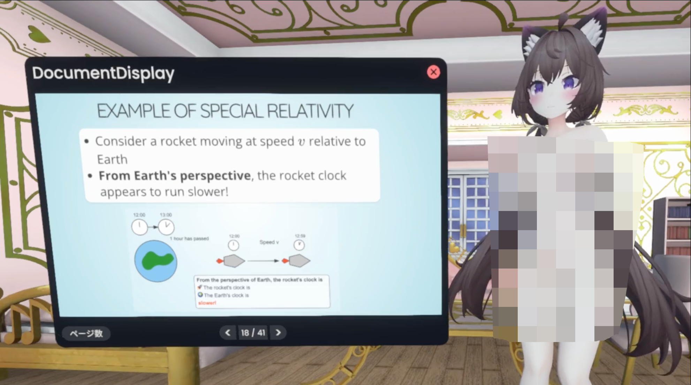 </div> <div class="col-right"> 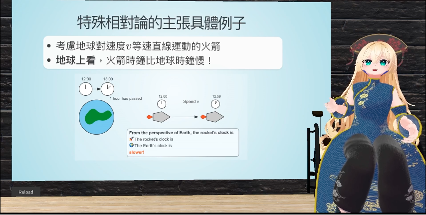 </div> </div> --- ### なぜ多言語展開？ <div class="simple-box"> * 日本の人口は減っている... * 日本だけをターゲットとすると市場は狭い... * **多言語展開でビジネスチャンスが増える！** </div> 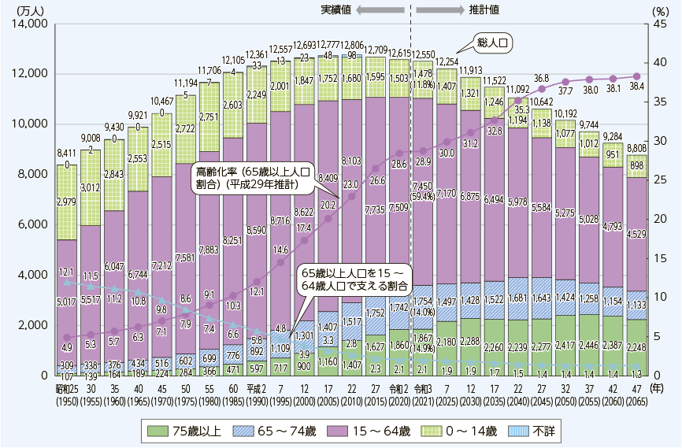 <div class="caption"> 総務省、[令和4年情報通信白書](https://www.soumu.go.jp/johotsusintokei/whitepaper/ja/r04/html/nd121110.html)より引用 </div> --- ## 多言語展開のノウハウ --- ### まずは日本語スライドを作成 <div class="simple-box"> * 発表スライドを[Reveal.js](https://revealjs.com/)で作成 * テキストでスライドを作成できるのがミソ </div> 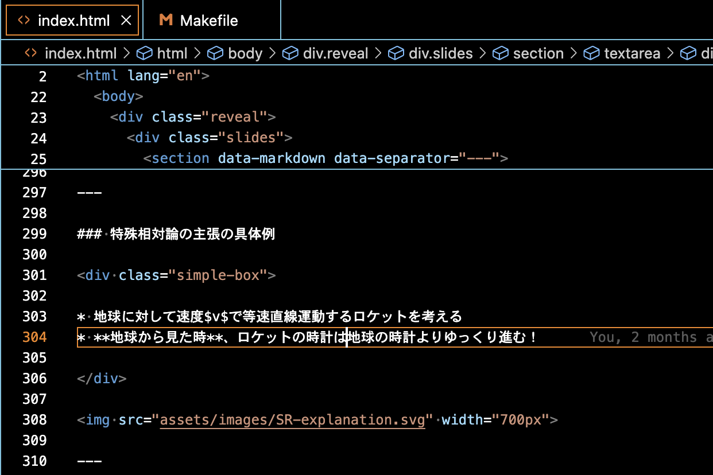 --- ### 発表原稿を作成 <div class="simple-box"> * 発表原稿を作成 * Cursorにパパッとドラフトを書いてもらう </div> 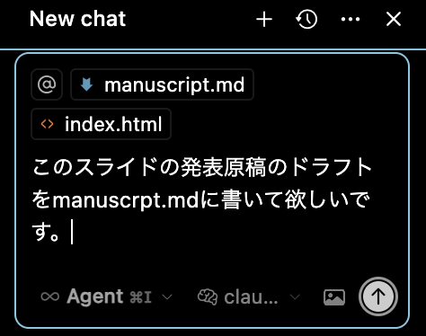 --- ### 発表原稿を修正 <div class="simple-box"> * 発表原稿のドラフトをLLMが書いてくれたので、微修正して仕上げます </div> 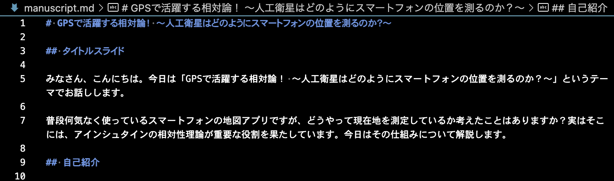 --- ### 日本語の動画を撮影、編集 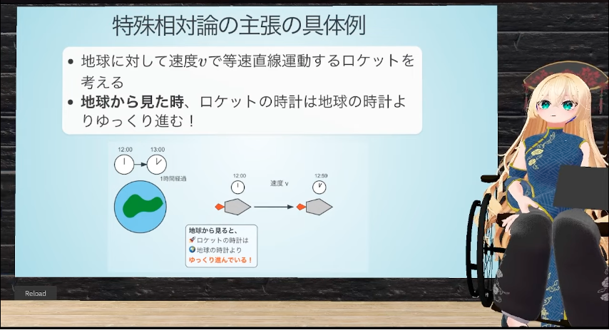 <div class="simple-box"> * 一番手間と時間がかかってるけど、今日の本題ではないのでスキップ </div> --- ## 英語の動画の作成 --- ### 英語スライドの作成 <div class="simple-box"> * Cursorにスライドを英語にしてもらう </div> 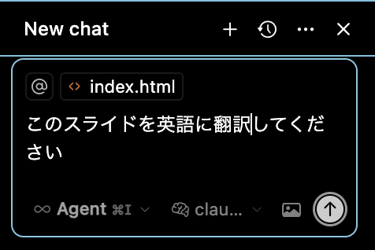 --- ### 英語スライドの修正 <div class="simple-box"> * 英語スライドができるので仕上げます </div> 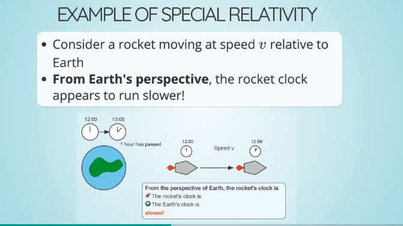 --- ### 英語特有の問題 <div class="simple-box"> * 英語はスライドの文字数が多くなるので、スライドの文字数を減らす * 漢字を使う日本語と中国語は情報の圧縮率が高い * DeepL等の機械翻訳を使いながらチェック * 最後はやっぱり自力で英文読解をします... </div> </div> 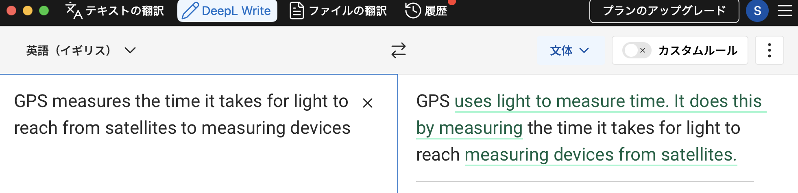 --- ### 英語の発表原稿を作成 <div class="simple-box"> * まったく同じ手順で英語の発表原稿を作成、修正 </div> <div class="container"> <div class="col-left"> 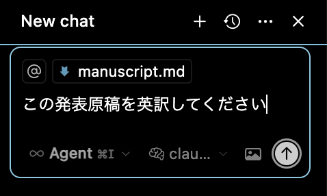 </div> <div class="col-right"> 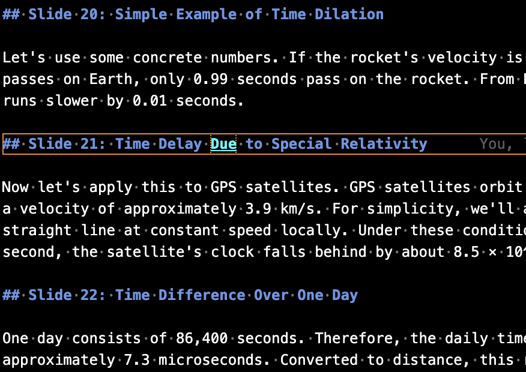 </div> </div> --- ### 英語の音声を作成 <div class="simple-box"> * TTS (Text to Speech) で英語の音声を作成 </div> <div class="container"> <div class="col-left"> 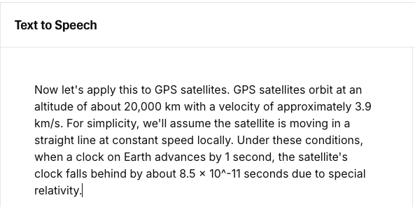 </div> <div class="col-right"> 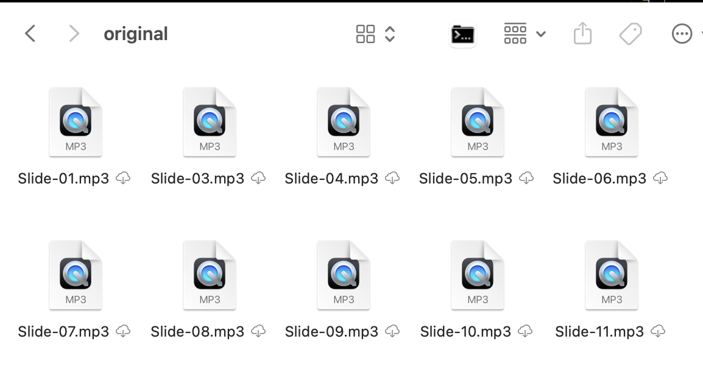 </div> </div> --- ### 英語音声作成時の注意点 <div class="simple-box"> * 数式や単位はTTSに読みやすい形に変えておく * 例示をしてLLMに任せてもOK </div> <br> <div class="highlight-box"> 代表的な例 * Speed of light c = 3.0 × 10^8 m/s * → Speed of light c equals 3.0 times 10 to the power of 8 meters per second * dx/dt * → dee x over dee t </div> --- ### 英語の動画を撮影、編集 <div class="simple-box"> * 仮想マイクで英語音声を再生してアバターに英語を喋ってもらう * 音声に合わせて身振り手振りを入れるとより自然な動画になる </div> 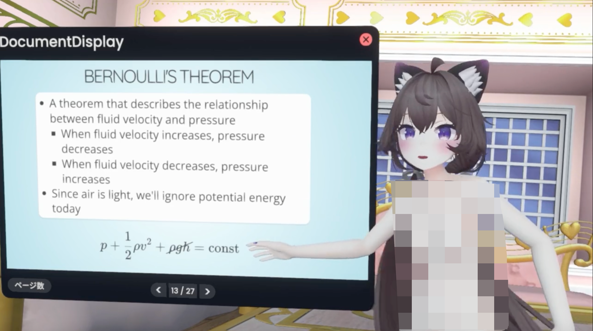 --- ### 中国語の動画の作成 <div class="simple-box"> * 基本的なフローは英語と同じ * 筆者は中国語勉強中なので細かいニュアンスは表現できていないはず、精進します... </div> <img src="assets/images/zh-video-screenshot.png" width="800px"> --- ### エンゲージメントの向上 <div class="simple-box"> * 英語版動画は50%以上が海外からの視聴 * 中国語版は60%が台湾からの視聴 * まだ再生数や登録者は少ないが、世界の人に見てもらえる手応えを感じている </div> <div class="container"> <div class="col-left"> 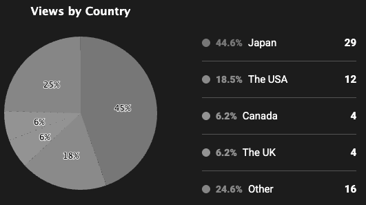 </div> <div class="col-right"> 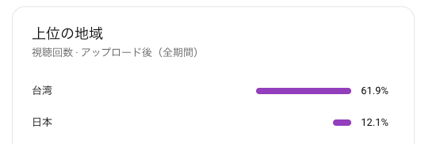 </div> </div> --- ## 異文化への理解を深める --- ### 英語圏でアウトな事例 <div class="simple-box"> * 画面左のイラストは「世界で二番目に視聴者が多い動画サイト」では規約違反 * "non human content violation content concern **loli character**" → 海外では「ロリ」扱い！？ </div> 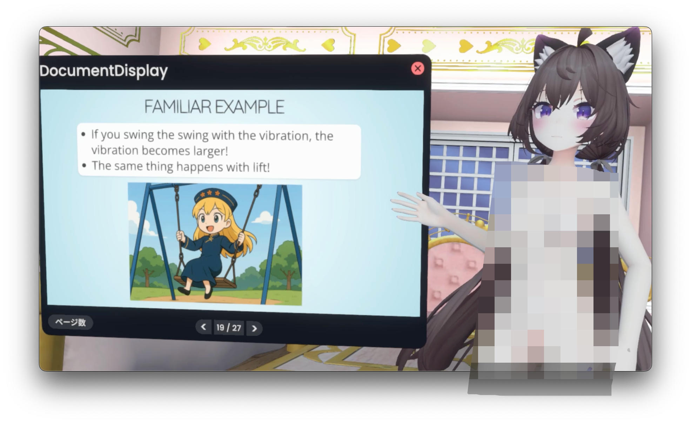 --- ### 多言語展開で学ぶべきこと <div class="simple-box"> * 文章や音声を翻訳するだけなら、ハードルは大きく下がった * 多言語展開は、翻訳だけでは不十分 * **異文化への理解を深め、プラットフォームや文化圏に合わせたローカライズが重要！** </div> <br> <div class="highlight-box"> * 言語の壁が下がったからこそ、よりコアな部分への理解に注力できる！ </div> --- ### 多言語展開で得た副産物 <div class="simple-box"> * 語学(英語、中国語)の勉強 * VRChatで海外のユーザーと交流 * 英語圏の(偏った)文化やマーケットへの挑戦 </div> --- ### まとめ <div class="simple-box"> * 動画を多言語展開することで、世界に自分を発信できる * 単なる翻訳はハードルが下がっていて意外と簡単 * 言葉の壁が下がったからこそ、異文化への理解とローカライズが重要になる * **動画制作に限らず、個人開発プロダクトにも通じるものがあるはず！** * **世界に向けて自分を売ろう！** </div> --- ## 余談: 世界で二番目に視聴者が多い動画サイトへの挑戦 --- ### Model Programへの登録 <div class="simple-box"> * パスポートの写真と自分のIDを書いた紙を持ったマグショットをアップロード * ...合衆国の刑務所に収監される囚人のような気持ちになりました </div> --- ### 本名の呪い <div class="simple-box"> * わたしの本名は「翔太(Shota)」なのですが、「世界で二番目に視聴者が多い動画サイト」では"Shota"は禁止ワード(おそらく鉄人28号の影響) * しょうがないので"Shouta"で登録しようとしたら、「パスポートと名前が違います」と登録を拒否された * 運営に直接メールをして解決、これだけで4営業日かかりました... </div> --- ### Animated content creatorへの登録 <div class="simple-box"> * 実写ではなくアニメーションコンテンツをアップロードする場合は、自分が製作者であることを証明する動画の提出が必要 * 審査に1週間かかりました... </div> <div class="container"> <div class="col-left"> 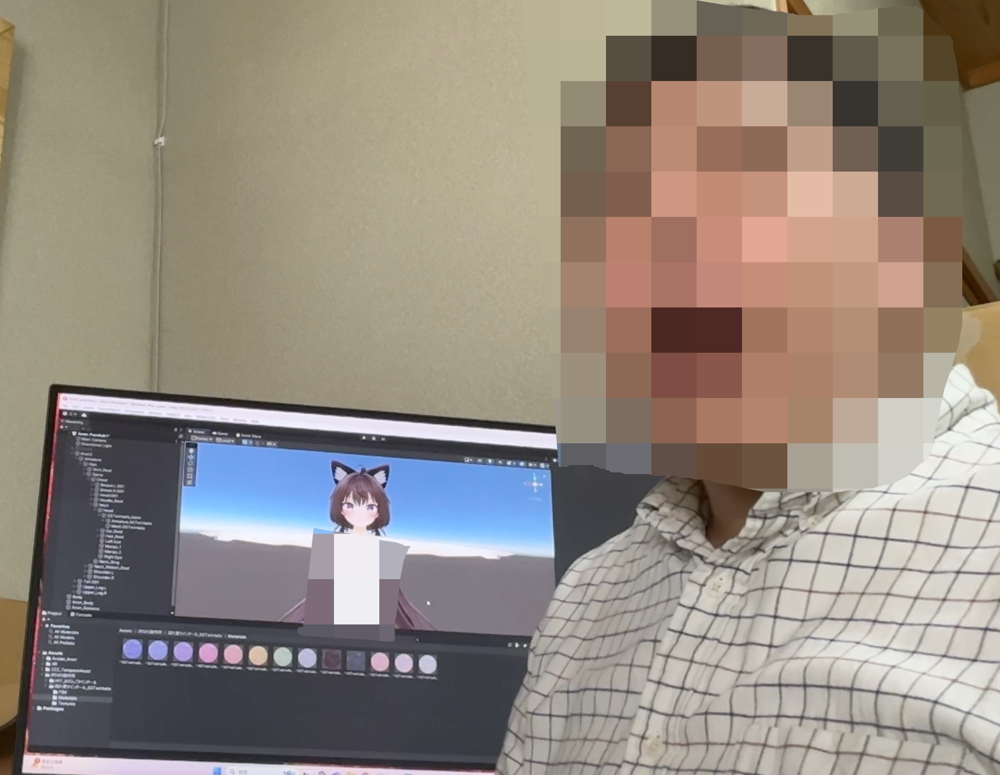 </div> <div class="col-right"> 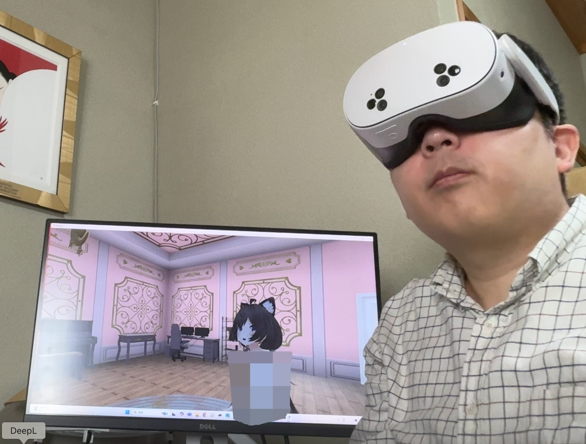 </div> </div> --- ### TTS音声利用への釈明 <div class="simple-box"> * Animated content creatorの登録ができたので、動画をアップロード * ...が、「出演しているVoice Actorの出演承諾書を提出してください」とリジェクト * 「実在の声優は出演していない、TTSの音声を利用してアバターに喋らせている」と釈明する動画を撮影して提出 * 1週間後に承認！ </div> --- ### 登録完了と動画の公開 <div class="simple-box"> * 登録が完了したので、動画をアップロード * レビュー完了後に公開 </div> <br> <div class="highlight-box"> * 「世界で二番目に視聴者が多い動画サイト」は審査がめちゃくちゃ厳しい！ * でもそれは倫理的で持続可能なNSFWサービスを提供するための取り組み！ * 自分が投稿者にならなければ知ることができなかった * 新しい挑戦は常に新しい学びを与えてくれる！ </div> --- ### 補足 <div class="simple-box"> * 「世界で二番目に視聴者が多い動画サイト」のようなNSFWコンテンツを制作するときは、各サービスのTerms of Serviceをよく確認する * 例えばVRChatはNSFWな利用を禁止している * ゾーニングがされていればNSFWな利用方法が公式に認められているResoniteを利用 * 高速道路で制限速度を律儀に守っているような気持ちになりました... * サービスの利用規約を守ろう、という当たり前だけど意外と難しい話 </div>